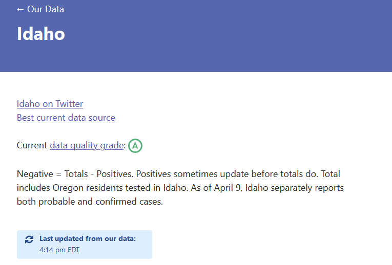

API docs should mention the by-state nuance in "positive"
Issue number 439
waded opened this issue on May 21, 2020 at 8:07 am
I noticed at https://covidtracking.com/api that the “positive” field e.g. for StateData is described as “Total cumulative positive test results.”
Based on resolution of issue #308 it sounds like there is some flex in that “positive test results” restriction.
So I request the description be enhanced to include various other conditions which are allowed to be counted in this field so that it’s known to people doing modeling based on it. (e.g. predicting onset date.)
e.g. if resolution of #308 is correct, then include at least two caveats in “positive.” These are based on Idaho DHW’s definition of their “probable” count which is currently a component of COVID Tracking Project’s “positive” for that state:
- includes symptomatic people with epidemiologic risk factors (but were not tested)
- positives may be reclassified as negative (subtracted from positive) if laboratory testing is performed later indicating negative
I also suggest the test type be qualified, e.g. molecular amplification (vs. otherwise.)
I don’t have visibility beyond Idaho so I don’t know what other qualifications might exist, but I think the above are probably relevant for most states.
Thank you @waded. We agree 💯 .
There have been a lot of changes by states recently with regards to what they are reporting for cases, deaths, and tests. We are working to make all the information we have about what the state is reporting transparent to data users. We are using the notes field in each state to communicate this information for now, but we are working on more detailed communication and will take your suggestion into consideration.
https://covidtracking.com/data/state/idaho#historical 